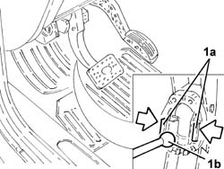
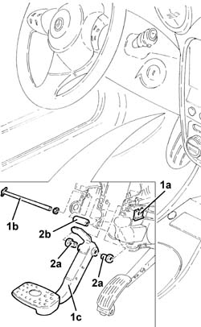
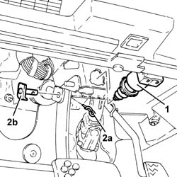

3330B24 brake pedal - r r for versions with manual gearbox with hydraulic selection
- Path
- Procedures > 33 BRAKING SYSTEM > 3330 HYDRAULIC BRAKING SYSTEM > 3330B pedal unit > 3330B24 brake pedal - r r for versions with manual gearbox with hydraulic selection
- Kind
- repair procedure (removal / refitting; the operation number is the code)
- Applies to
- engines: 2.0 TS, 3.2 V6; all production periods
- Interactive page
- https://sloeber94.github.io/elrnDB-a147/en/#/3025225
Applies to: engines: 2.0 TS; all production periods; only with equipment: Cambio robotizzato
 Removing
Removing
 Refitting
RefittingEnsure that the ignition key is in the OFF position, then disconnect the negative battery terminal (-).
 | Name | Connector |
|---|---|---|
- | Battery |
Proceed with removal 5550D10 brake light switch - r+r .
1. Release the retaining clips (1a) and disengage the brake pump (1b) from the brake pedal.

Applies to: engines: 2.0 TS; all production periods; only with equipment: Cambio robotizzato
1. Remove the stop clip (1a), withdraw the bolt (1b) and remove the brake pedal (1c).
2. Recover the bushes (2a) and spacer (2b).

Applies to: engines: 2.0 TS; all production periods; only with equipment: Cambio robotizzato
Refitting
RemovingRefit the brake pedal in its seating complete with bushes and spacer, then secure it with its bolt and the stop clip.
Refit the brake pump in its seating, connecting it to the brake pedal.
Proceed with refitting 5550D10 brake light switch - r+r .
Connect the negative (-) battery terminal.
Applies to: engines: 3.2 V6; all production periods; only with equipment: Cambio robotizzato
Removing
Refitting1. Rotate the stop lights switch and release it from its mounting bracket.
2. Withdraw the split pin (2a) and withdraw the pin (2b) connecting the brake pedal to the brake servo.

Applies to: engines: 3.2 V6; all production periods; only with equipment: Cambio robotizzato
1. Undo the bolt (1a) and remove the brake pedal (1b) complete with bushes (1c).

Applies to: engines: 3.2 V6; all production periods; only with equipment: Cambio robotizzato
Refitting
RemovingFit the brake pedal complete with bushes and fix it to the pedal assembly, tightening the bolt to the recommended torque.
 | Fastening | Component | Ø | Value (daNm) |
|---|---|---|---|---|
- | Bolt | BRAKE PEDAL | M8 | 3.2 |
Fit the pin connecting the brake pedal to the brake servo and secure it with its split pin.
Replace the stop lights switch in its seat.